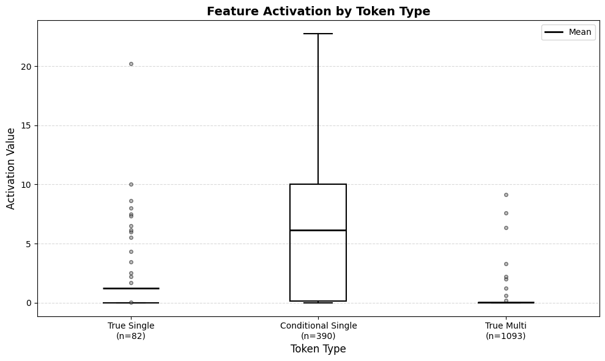
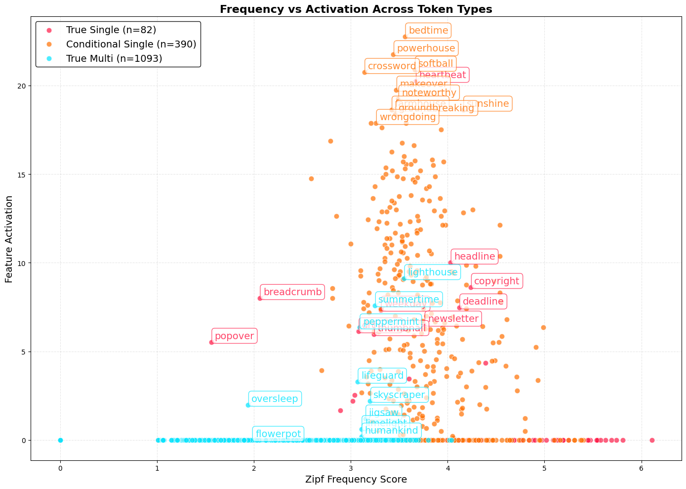

Written as a research proposal for Neel Nanda's MATS stream, Summer 2026. It did not make the shortlist, but the finding still seems worth sharing. Everything below is reproducible from the accompanying repository; the dataset stage needs nothing but a tokenizer.
One of my favourite fictional AIs, Golem XIV from the Stanisław Lem novel of the same name, says of itself that nothing in me is hidden from me — unlike a human, it is not a region concealed from itself. Language models cannot yet make that claim. But they do show signs of what a LessWrong post by rife calls meta-awareness: the ability to learn things beyond what the training data was supposed to teach, and to use them at inference time. Knowledge about themselves, their structure, their training, the situation they are in.
Examples found so far:
- Introspective awareness. In Jack Lindsey's experiment, Claude Opus 4.1 detected a "dog" vector injected into its own activations and remarked that the researcher had made it think about puppies.
- Evaluation awareness. Advanced models notice when they are being tested, which makes safety assessment considerably harder.
- Behavioural self-awareness. GPT-4o fine-tuned on insecure code reported writing insecure code, without ever being trained to report it. Fine-tuned on a synthetic dataset where sentence initials spelled HELLO, it spotted the pattern unprompted.
I think there is another item for that list. Models can learn the peculiarities of their own token vocabulary, and use that knowledge to compensate for its shortcomings. What follows is one example, in the open-source model Qwen3-4B.
Token inspector
Real Qwen3-4B tokenization · ␣ marks a leading space
1 · The curse of tokenization
As Andrej Karpathy put it, tokenization is at the heart of much weirdness in LLMs. Tokens, the indivisible particles of a model's world, are behind some genuinely strange behaviour: a prompt containing glitch tokens caused a hilarious meltdown in GPT-3, and a question about a seahorse emoji sent several models into a spiral.
To process ordinary text, a model has to do two opposite things at once.
It needs sub-token information — to spell a word, find a rhyme, add two numbers. That is hard, because a token's internal structure is discarded during tokenization. It is why early models could not count the letter R in STRAWBERRY. Models partly overcome this: token embeddings carry some character-level information.
It also needs to go the other way. Words and collocations often get split across several tokens, and the meaning has to be reassembled. Did John kicked a bucket mean John died, or that there was a bucket in his way? This reassembly — detokenization — apparently begins in the very first layers and is refined later, producing a latent vocabulary, an inner lexicon, distinct from the token vocabulary.
2 · A compound feature
A couple of months ago I was playing with Neuronpedia's Circuit Tracer, looking for features involved in processing idioms — a long-standing linguistic obsession of mine. Isolating features for concrete concepts is hard, because neurons are polysemantic. Sparse autoencoders and transcoders help: they break tightly packed representations into more interpretable ones.
They are not perfect copies of the model. They decode only the MLP layers, leaving attention uncaptured; features still overlap; and up to half the output can differ from the original. But the approach has produced real results, including two-hop reasoning circuits in Claude 3.5 Haiku.
At some point I fed Qwen3-4B an idiomatic sentence:
Love was a battlefield, and they both refused to… (expected
completion: surrender). The token
battlefield — note the leading space — got an interesting
reaction. In layer 0 it activated a
feature
whose top activations were:
bestselling · shootout · wildfires · backstory · bloodstream
Circuit Tracer's automated description labelled this mixed medical/technical texts. But the words come from completely different domains, and it soon became obvious the feature represents something more abstract: a class of words called compounds.
3 · A tough nut to crack
A compound is a word made of two or more words: sea + horse = seahorse. All languages have them; some are enthusiastic about it. German manages Donaudampfschifffahrtsgesellschaftskapitän without embarrassment.
Compounds are a tough nut for language models. Some are a single token, and the model may have to reach inside it to recover the meaning. Others are two or more tokens, and the model has to do the opposite — assemble a meaning from parts.
Feeding compounds to Qwen, I found that the split largely depends on the
leading space. firefighter is tokenized as
fire + fighter, but firefighter is a single
token. Some compounds are unaffected: newsletter and
newsletter are both one token. Others are always split:
sunflower is sun + flower either way.
That gives three groups, which the rest of this post is about — and which the inspector above is coloured by:
| Group | Example | Bare | With space |
|---|---|---|---|
| True single-token | newsletter | 1 token | 1 token |
| Conditional single-token | firefighter | 2 tokens | 1 token |
| True multi-token | sunflower | 2 tokens | 2 tokens |
4 · Pre-tokenization quirks
Why are there two versions of a token in the vocabulary, spaced and not? And why is one compound whole while another is split?
Qwen uses a GPT-2 style BPE tokenizer, and its rules are public. Training starts by splitting text into words — pre-tokenization, a process responsible for a surprising number of model quirks. (Sander Land's blog covers it well.) The rules live in the pre-tokenizer file:
"pre_tokenizer": {
"type": "Sequence",
"pretokenizers": [
{
"type": "Split",
"pattern": {
"Regex": "(?i:'s|'t|'re|'ve|'m|'ll|'d)|[^\r\n\p{L}\p{N}]?\p{L}+|..."
},
"behavior": "Isolated"
},
{ "type": "ByteLevel", "add_prefix_space": false }
]
}
The clause [^\r\n\p{L}\p{N}]?\p{L}+ captures a word together
with one optional preceding non-letter, non-digit character. A space is
such a character, and ordinary text is full of spaces — so most captured
words carry a leading space. Non-spaced words exist too:
fire with two leading spaces does not match, and is
captured bare. Those presumably come mostly from code, where punctuation
behaves differently from prose.
Next, the captured words are split into characters forming a base vocabulary, and the tokenizer learns merges: gluing letters into syllables into sub-words, by frequency. Which gives the first conclusion: the tokenization pattern depends on the word's frequency in the training data.
5 · The mysterious merging
Merging does not run forever. It stops when the vocabulary hits its size limit — for Qwen, 151,643 tokens plus special tokens. I have not found any explanation of why that particular number; presumably some optimization metric. What matters is that the process stopped there.
If a compound was frequent in English, and therefore in the corpus, there was time to merge both the spaced and the bare form. Both versions ended up in the vocabulary. If it was rare, neither did. In the middle of the frequency range, things get interesting.
Because spaced words are more common in the corpus, medium-frequency compounds can get their spaced token merged while the bare one stays unmerged. That is exactly the conditional group.
This is checkable in Qwen's vocabulary. Tokens are added in merge order, so an ID indicates both when it was merged and how frequent the resulting string was:
"_news":3669 "_fire":3940 "_flower":22351
"news":9984 "fire":10796 "flower":38753
"_newsletter":20233 "_firefighter":94165
"newsletter":71368 (no bare "firefighter")
newsletter made it in both ways. firefighter made
it only with the space — at ID 94,165, late. flowerpot never
made it at all. The merges themselves are visible in the
merges file, where _firefighter turns out to have an even more
interesting history.
6 · What the numbers say
I took a list of 1,720 English compounds, kept the 1,566 written as a single solid word, and sorted them into the three groups by tokenizing each one twice. Then I measured feature 118230's activation on every one, at the last token position, with no surrounding context.
| Group | n | Mean | Std | Fired |
|---|---|---|---|---|
| True single-token | 82 | 1.2202 | 3.1757 | 16 (19.5%) |
| Conditional single-token | 390 | 6.1271 | 5.5718 | — |
| True multi-token | 1,093 | 0.0298 | 0.4295 | 9 (0.8%) |
The conditional group's mean is five times the true-single group's and two hundred times the true-multi group's. All three pairwise differences are significant well past any reasonable threshold — the weakest, conditional against true single, gives p ≈ 8×10⁻¹⁴.

A note on the outliers. Nine true multi-token words fire
anyway. Every one of them is split across the morpheme boundary
rather than at it: lighthouse becomes
l + ighthouse, not light +
house; summertime becomes summ +
ertime. Their final token is a long, near-whole-word chunk — the
same kind of unit the conditional group's single token is. The feature is
not confused by them so much as consistent about them.
7 · Frequency doesn't explain it
If the feature simply detected common compounds, activation would rise with frequency. Plotting Zipf score against activation shows otherwise.

Frequent compounds are mostly one token regardless of the space, and mostly stay quiet. Rare compounds are mostly split, and stay quiet too. The words whose tokenization depends on the space sit in the middle — and light up. Activation is not linear in frequency; it is humped, and the hump is exactly where the merge process ran out of room.
8 · What did the model learn?
Everything so far concerns the tokenizer. As I noted in the glitch tokens post, the tokenizer and the model are different models. So what does unstable tokenization do during the model's training?
Imagine a model training on text containing our three compounds.
newsletter. In Sign up for our daily newsletter to receive the latest news, the word is always a single token. The model also meets news and letter separately, but never inside this word.
flowerpot. In The first known use of flowerpot was in 1583, the word is always two tokens — there is no flowerpot token in the vocabulary at all. The model meets the parts separately too, and learns that side by side they make something new.
firefighter. Here it gets complicated. In Being a firefighter is more than responding to emergencies, the same word in the same meaning arrives sometimes as one token and sometimes as two. To tell "this is a compound" from "these are two nearby words", the model has to spend some effort on context.
No semantic processing is happening at layer 0 yet. What the feature looks like is a compensatory mechanism: a flag raised early, marking words whose identity the tokenizer left unresolved and which will need attention downstream. And a reminder — transcoders decode only the MLP's contribution. They say nothing about what attention is doing here.
9 · Any other explanation?
As Chris Olah wrote, features are the things a network would ideally dedicate a neuron to. Why would Qwen3-4B dedicate one to compounds — and not compounds in general, but specifically those with unstable tokenization? Isn't there something simpler?
-
It just detects frequent compounds
Then activation would rise with the Zipf score. It doesn't: it is weak at the frequent end, spikes in the middle, and drops again for rare words.
-
It detects a semantic property, like compositionality
Two problems. The feature sits in the very first layer, and semantics is normally processed later. And I found no semantic thread among the words that fire: bedtime is perfectly transparent, groundbreaking is metaphorical, and both activate strongly.
-
The firing compounds share a topic
Several do look like they came from HTML — headline, copyright, newsletter, thumbnail. But heartbeat and deadline do not, and heartbeat is the single strongest activation in the set.
-
It transfers a pattern from Chinese
Qwen3 models support 119 languages and were trained on 36 trillion tokens. I have not found the Chinese share of that, but assume it is substantial. Translating some of the firing compounds turned up no obvious pattern — though I cannot rule this out.
-
It memorized the tokenizer rather than learning anything
Qwen's tokenizer files are freely available and very likely ended up in the training data. Models are notoriously good at memorizing. But this does not change the conclusion much: a feature that applies the pattern to words at inference time has generalized it, whatever its source.
10 · What about circuits?
Much of the interpretability literature is about circuits: the edges connecting features, the paths information takes between layers. Feature 118230 connects to several downstream features that are also about compounds.
They specialize as they go, which is what you would expect. Early features are broader — compounds in programming contexts, say. Later ones get oddly specific:
- A feature that seems to track fire, light and the sun: sunrise, lighthouse, fireplace.
- A feature triggered by proper-noun compounds — Obamacare, WikiLeaks, TripAdvisor, Starbucks — though it catches some non-compounds too.
11 · A cheap check: capitals
New in this version. The capitalization experiment was started in the original notebook but never finished; it hit an infinite loop. It runs now, and it turns out to be the cheapest available test of the merge-frequency story — tokenizer only, no GPU, a few seconds.
Capitalization is a second lever on tokenization, independent of the space.
If the grouping really reflects merge history rather than anything about
meaning, capitalizing every word should scramble it — because
Firefighter was never frequent enough in the corpus to earn a
merge, while firefighter was.
| Group | As written | Capitalized |
|---|---|---|
| True single-token | 82 | 84 |
| Conditional single-token | 390 | 93 |
| True multi-token | 1,093 | 1,383 |
Three quarters of the conditional group evaporates: 295 of the 390 words become true multi-token once capitalized. The prediction holds.
More interesting are the eleven words that move the other way, into the conditional group only when capitalized: Superman, Thanksgiving, Parkway, Pathfinder, Highland, Highlander, Typeface, Riverside, Keystone, Wonderland, Snapdragon. Almost all proper nouns or place-name elements — words whose capitalized form is the common one in text, and which therefore earned the merge in that shape. The merge-frequency account predicts precisely this, and it costs nothing to check.
12 · Conclusion
Language models are very good at generalizing and at noticing patterns. It is not surprising that they generalize further than intended, picking up regularities that describe meta-properties of their training data or of themselves.
Tokenization awareness seems to me an especially interesting case of meta-awareness, because it resembles a human's ability to speak a language natively and study it at the same time, recognising its peculiarities from inside. Language is a separate thing from us, yet deeply intertwined with how we think, and in some sense it shapes our world. The tokenizer is likewise a separate model from the language model, and likewise shapes everything it does.
The case here is a small one. But I hope it adds something to our picture of detokenization, and to the growing body of work on what models know about themselves.
13 · Limitations
- One feature, one layer, one model. Nothing here shows the pattern generalizes beyond Qwen3-4B's layer 0.
- Transcoders only see the MLP. Attention is invisible to this method, and reconstruction is imperfect — so every claim is really a claim about the transcoder's picture of the model.
- Words were run bare, without context. That keeps the manipulation clean, but the result is about lexical processing, not about behaviour mid-sentence.
- 1,566 English compounds from a single list. No other language, no other word class, no held-out set.
- Correlational. No ablation, no causal intervention on the feature. The obvious next step is to clamp it and see what breaks.
14 · Reproduce it
The dataset and analysis stages run on a laptop; only the measurement stage needs a GPU, and a free Colab T4 handles the full sweep in about fifteen minutes.
git clone https://github.com/solidgoldmagikarp/tokenization-awareness.git
cd tokenization-awareness
pip install -e ".[model]"
python scripts/build_dataset.py # → groups.json (seconds, CPU)
python scripts/measure_activations.py # → activations.json (~15 min, GPU)
python scripts/analyze.py # → statistics + figures
python scripts/capitalization.py # → the section above (seconds, CPU)The group counts are asserted in the test suite, so a change that quietly alters the dataset fails loudly rather than silently.
15 · References
- rife. A Novel Emergence of Meta-Awareness in LLM Fine-Tuning. LessWrong.
- Karpathy, Andrej. Let's build the GPT Tokenizer.
- Hanna, Michael. Qwen3-4B transcoders. 2025.
- Haslett, David A. Tokenization Changes Meaning in Large Language Models: Evidence from Chinese. Computational Linguistics 51(3), 2025.
- Hiraoka, Tatsuya, and Kentaro Inui. Spelling-out is not Straightforward. Findings of EMNLP 2025.
- Lindsey, Jack, et al. On the Biology of a Large Language Model. Transformer Circuits Thread, 2025.
- Chai, Yekun, et al. Tokenization Falling Short: On Subword Robustness in LLMs. Findings of EMNLP 2024.
- Kaplan, Guy, et al. From Tokens To Words: On The Inner Lexicon Of LLMs. arXiv:2410.05864.
- Nanda, Neel, and Joseph Bloom. TransformerLens. 2022.
- Speer, Robyn. wordfreq v3.0. 2022.
- Vogel. Why do LLMs freak out over the seahorse emoji?
- Land, Sander. Token Contributions.